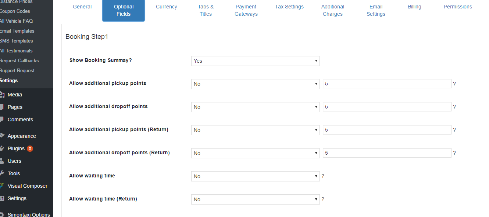
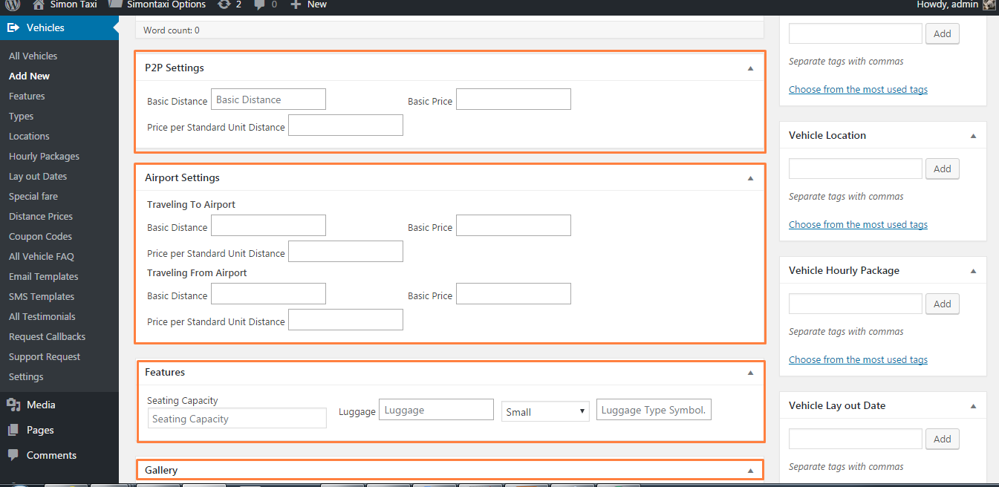

SimonTaxi - Taxi Cab Vehicle Booking WordPress Theme
- created: 03/10/2011
- latest update: 01/9/2017
- by: Digisamaritan
- digisamaritan.com/
- Support email: digisamaritan@gmail.com
- Support Skype : digital.vidhya
- Support Forum :https://goo.gl/AFmBiP
Thank you for purchasing my theme. If you have any questions that are beyond the scope of this help file, please feel free to email via my user page contact form here. Thanks so much!
Installation
You can install the theme in two ways: through WordPress, or via FTP. The simontaxi.zip file is the Installable WordPress Theme and what you need to use to get the theme installed. Please see the following sections for each method.
1) Installation via Wordpress
2) Installation via FTP
Installation via Wordpress
- Navigate to Appearance -> Themes

Demo Data Installation
Widgets Installation
Note: - To import widgets you can use/install the widgets importer plugin.
- Once you are on the themes page, click on the Add New button at the top and click on Upload Theme button.
- Navigate to find the “Simontaxi.zip” file on your computer and click Install Now
Installation via FTP
- Log into your hosting space via an FTP software.
- Unzip the "Simontaxi.zip" file and Upload the extracted Simontaxi theme folder into wp-content > themes folder. .
- Activate the newly installed theme by going to Appearance > Themes and clicking the Activate button.
Then you will see a notification message to activate the required & recommended plugins: simontaxi-core, WPBakery Visual Composer.The recommended plugins are Revolution Slider. Follow the steps to install and activate each plugin.
Widgets
Simontaxi includes several custom widgets. All widgets are accessed in the Widgets section of the WordPress admin. Widgets can be added to any sidebar, footer column.There are various fields and settings to choose for each individual widget; all are self explanatory. You can put as many widgets as you want inside of a sidebar or footer.
-
Navigate to Appearance > Widgets to access the list of widgets and pages sections that they can be added to. The left hand side shows all the section you can use. The right hand side will show all the different sections you can add to.
-
Simply drag and drop the widget you want into the widget section you want on the right hand side.
-
Once you are done, make sure to click Save in the widget editing box to save the widgets added to your sidebar OR footer widgets
Options
Simontaxi comes with different options which are usful for different users for their own requirement
Navigate to Vehicles > Settings to access the different options available for simontaxi
-
General - Useful to change the default usage. So that users can use the system for different purposes ie. Vehicle, Cab, Bus etc. Admin can set the other options which are usefull throughout the system. Most of the settings on this tab are self explanatory. I will explain few are these in coming sections
-
Optional fields - Useful to turn ON/OFF some of the optional fields depending on admin requirement.
-
Currency - Options related to display currency in front end.
-
Tabs & Titles - Admin can easily rename the tab names in front end, without any programming knowledge.
-
Payment Gateways - Admin can Enable OR Disable the supported payment gateway.
-
Tax Settings - This tab will allow you to configure simple tax calculation rules, if applicable and how to calculate the tax.
-
Additional Charges - Admin can set different additional charges based on requirement. We are calculating Peak time, Airport, Additional pick up / drop off points, Waiting time
-
Email Settings - Options to edit email settings.
-
Billing - Admin billing details to be included on user invoice.
-
Permissions - Permissions for executive.
-
Default Title - The title used throughout the application
-
Default Title (Plural) - The plural title used throughout the application
-
Country - To be used to get the locations from google
-
Places - This option to use to get the locaitons OR places in front end for pickup or dropoff. There are 4 options available
- Google Places (All) - To get all locations from google [Google Places (Regions only) + Google Places (Cities only)].
- Google Places (Regions only) - To get all locations which includes locality, sublocality, postal_code, country, administrative_area_level_1, administrative_area_level_2
- Google Places (Cities only) - To get all locations which includes locality or administrative_area_level_3.
- Predefined - Locations which are defined by admin
-
Google API Key - You can get google API key from here
-
Distance taken from - This the option which decides, the calculation the distance in front end. If admin choose 'Google' - Distance will take from the google or else it will look for the distance in predefined locations entered by admin.
-
Display distance for user - This is the option whether to display distance to user or not.
-
Out of service - Specifies if there is any distance limitation for services. 0 means no limitation on distance.
-
Distance Type - Kilometers, Miles
-
Fare Calculation Based On - Basic Fare, Predefined Charges
-
Terms & Conditions on page - This will decide on which page 'Terms & Conditions on page' should display and the page where where 'Terms & Conditions on page' are exists.
-
Booking Reference String Length - This option gives the flexibility to admin to restrict the booking reference lenght.
-
Date Format - Date Format
-
Advance booking minimum - This gives the flexibility to admin to restrict the user booking how many days before user can book a vehicle.
-
Advance booking maximum - This gives the flexibility to admin to restrict the user booking upto how many user can book a vehicle.
-
Records Per Page - Records Per Page
-
Contact Phone - Admin Contact Phone to display on user invoice

Most of the fields on this tab are self explanatory. This tab will give the flexibility to admin what are fields to show in front end. Admin can enable OR disable the fields based on requirement.
This section allows you to manage not only what currency is used, but how it is shown to the customer.
- Currency Type - This is a list of supported currencies. You may choose one from the list.
- Display Currency - Available options are 'Symbol', 'Code'.
- Currency Position - Available options are 'Left', 'Right', 'Left with space', 'Right with space'.
This section allows you to manage tab titles in front end and what are tabs to display in frontebd.
Payment Gateways
This section shows Payment Gateways Settings as well as each enabled gateway.
Simontaxi comes with three gateways built in, PayPal Standard, PayU, and By Hand. At the top of the Payment Gateways Settings page you'll see those listed. BY clicking on any payment gateway link you can edit settings for the particular payment gateway.
Tax Settings
This tab will allow you to configure simple tax rules for bookings. If you do not wish to charge any tax on purchase, simply enter 0 in 'Tax Rate' option.
Additional Charges
This tab will allow you to impose any additional chanrges on user bookings based on their timings, if airport, additional pickup or dropoff, waiting time. If you do not wish to charge any additional charge simply enter '0' in each option.
Email Settings
This tab will allow you to Enable OR Disable email sending options. Set the ‘From’ name and email address for the sender used in Simontaxi emails. This tab will give you the complete the flexibility over the email communication. Following options are available:
- Bookings Success
- Bookings Cancel
- Bookings Failed
- Bookings Confirm (Admin/Executive)
Note: If you enables 'WP-SMS' Plugin which is available here, it will alos handles the SMS sending enable or disable
Billing
This allows you to enter billing details which are useful while generating user invoice.
Permissions
This allows you to enable or disable permissions for executives.
Vehicles
You can add or edit or delete vehicle. You can enter more settings like Basic Fare details for each type of transfer(P2P, Airport, Features, Gallery, Types etc) for each vehicles while add or edit the vehicle.

VC Elements
Simontaxi come with many visual composer elements, which are very useful and handy.
Following elements are available:
- Simontaxi Booking Page - Which display the booking page 'step1'
- Simontaxi FAQs - By Which you can add FAQs
- Simontaxi Vehicles - By which you can display all available vehicles in front end as a element in a page along with other elements.
- Simontaxi Latest Updates - This element will display latest posts from the blog.
- Simontaxi Get Mobile app - By Which you can add Mobile app section if you have mobile app for the application
- Simontaxi Inner banner - By Which you can create banner for the page.
- Simontaxi About us page
- Simontaxi Call Now - By this element you can add call now section.
- Simontaxi Advertise - By this element you can add Advertise section
- Simontaxi Home Page Banner - By Which you can create banner for the home page.
- Simontaxi Vehicles List - By which you can display all available vehicles list on a page.
- Simontaxi Vehicles Gallery - By which you can display all available vehicles gallery on a page.
- Simontaxi Testimonials - By which you can display testimonials.
- Simontaxi Drivers - By which you can display drivers.
Bookings
User can book a vehicle by choose the available options and based on admin settings [Vehicles->Settings].
User Account
Following tabs available for user for the convenience.
- My Account - To edit profile details
- Booking History
- Payment History
- Support - To rise a support ticket
- Billing Address - To update billing address
Change log
| S.No. | Change Date | Versions |
|---|---|---|
| 1 | December, 2016 | version 1.0 |